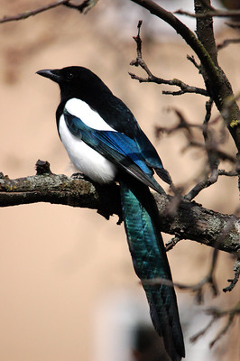
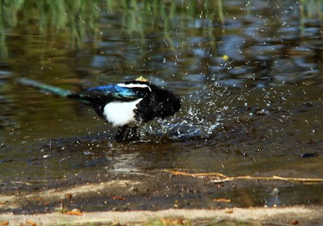

Harakan suomenkielinen nimi on balttilaisperäinen, ja nimi on suomessa vanha ja vakiintunut.Keuruulla harakasta käytettiin myös nimeä kuolemanilmoittaja ja Halikossa pirunharakka. Tieteellinen nimi Pica on latinaa ja tarkoittaa harakkaa jo Pliniuksella.
Harakka on 40–51 senttimetriä pitkä, josta pyrstön osuus on 20–30 senttiä. Väritykseltään harakka on mustavalkoinen lintu, jolla on vihreähohtoinen pyrstö. Koiraan pyrstö on yleensä naaraan pyrstöä pitempi. Pohjois-Afrikkalaisella mauretanica-alalajilla on silmän takana paljas sininen alue. Harakan ääntely on käheää ja epämusikaalista räkätystä. Harakan laulu, jota kuulee harvoin, lähinnä maalis–toukokuussa, on hiljaista kitisevistä ja kirskuvista äänistä sekä matkinnoista koostuvaa rupattelua.
 Harakka on levinnyt lähes koko Eurooppaan, suureen osaan Aasiaa sekä Luoteis-Afrikkaan. Euroopan harakkapopulaation kooksi arvioidaan 22,5–57,0 miljoonaa yksilöä. Koko maailman kannan kooksi arvioidaan 45,9–228,0 miljoonaa yksilöä, mutta arvio on hyvin varovainen. Suomessa harakka pesii koko maassa, mutta kanta harvenee pohjoiseen päin mentäessä. Nykyisin Suomessa pesii 140 000–200 000 paria. Suomen harakkakanta taantui 1940–1950-luvuilta 1970-luvulle. Harakan vainoaminen väheni 1960–1970-luvuilla, jolloin se alkoi levitä myös kaupunkeihin ja harakkakanta kasvoi 1970- luvulta 1980-luvun lopulle. Harakka on pääosin paikkalintu, mutta nuoret yksilöt saattavat kierrellä syksyisin.
linkit:
Harakka video